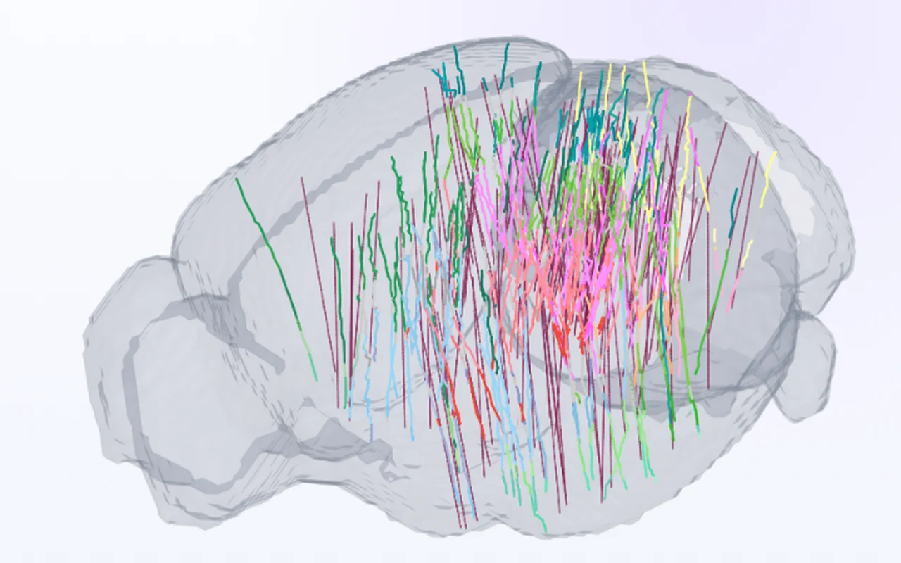
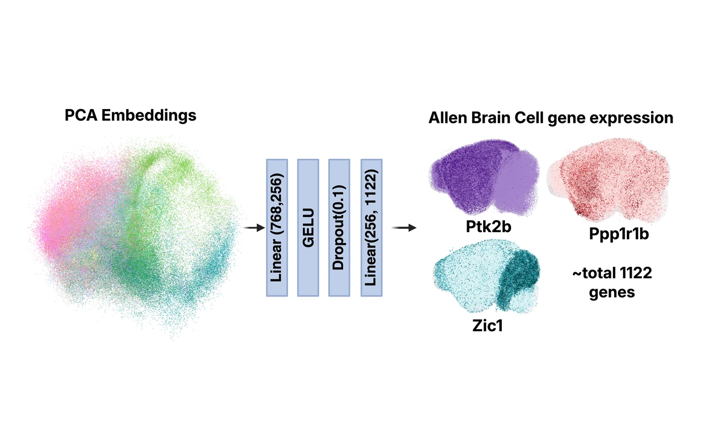
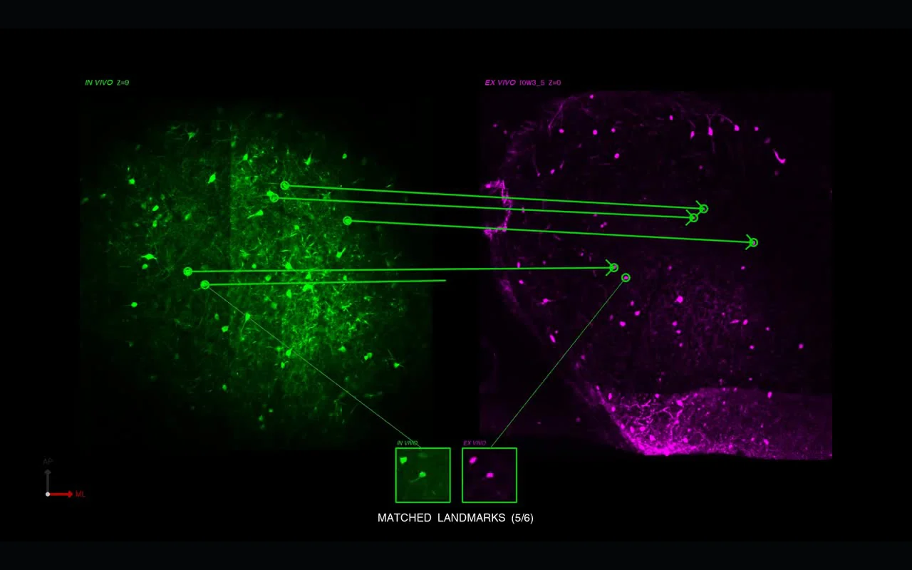

3D brain needs JavaScript and WebGL
LFPformer accepted at NeurIPS 2026 Paper
Research Engineer · NYU Neuroinformatics Lab
Subhrajit Dey
I build foundation models for neural data: self-supervised models for Neuropixels electrophysiology, and tools that link in vivo imaging, ex vivo microscopy and spatial transcriptomics.
About
Research Engineer, NYU Neuroinformatics Lab · M.S. Computer Science (Neuroinformatics), NYU Tandon, 2026
I am a full-time Research Engineer in the NYU Neuroinformatics Lab, working with Prof. Erdem Varol. I recently graduated with an M.S. in Computer Science (Neuroinformatics) from the NYU Tandon School of Engineering.
I build tools and analyze large-scale neural data spanning brain–computer interfaces (BCIs), Neuropixels electrophysiology, and related multimodal recordings, with collaborators including Prof. Saurabh Vyas and Prof. Attila Losonczy. My first-author paper, LFPformer, was accepted at NeurIPS 2026.
Longer term, I want to help build brain implants and neural interfaces that let people control and communicate with AI agents and the Internet as fluidly as imagined in Neuromancer and Cyberpunk 2077: technologies in the spirit of neural lace, direct brain–computer links, and closed-loop neuroprosthetics.
Before joining the lab full-time, I worked as a Computer Vision Engineer at Bigvision.ai, building end-to-end computer vision systems for retail and e-commerce. I earned a B.E. (Honours) in Electrical Engineering from Jadavpur University, where I published work in medical imaging and computer vision. During my master’s, I also served as a Course Assistant at NYU Stern (Consulting Capstone, Corporate Finance, and Foundations of Corporate Finance, Summer 2025), and developed a CRE loan-financing workflow with multi-LLM agents under Prof. Anthony Marciano.
Research
My research is in neuroinformatics: foundation models for neural data, multimodal translation across electrophysiology, imaging and transcriptomics, representational alignment between the brain and large world models, and tooling for BCIs and Neuropixels-scale recordings.
-

LFPformer
NeurIPS 2026 · first author
Self-supervised LFP representations that use only the probe geometry and insertion coordinates logged at acquisition, for 3D localization and brain-region decoding across labs, species and probes.
-

LFP2Gene
NeurIPS 2026 Workshop · Foundation Models for the Brain and Body
Decoding the local gene-expression profile near each recording site from pretrained LFPformer features, matched to spatial transcriptomics through a common atlas.
-

In vivo ↔ ex vivo cell registration
bioRxiv 2026 · under review
Linking two-photon calcium imaging in behaving mice to spatial transcriptomics of the same hippocampal interneurons, with a 4-modality 3D viewer.
News
- LFP2Gene accepted as a poster at the NeurIPS 2026 Workshop on Foundation Models for the Brain and Body.
- LFPformer accepted to NeurIPS 2026 (poster).
- Graduated with an M.S. in Computer Science (Neuroinformatics) from NYU Tandon; now a full-time Research Engineer in the NYU Neuroinformatics Lab.
- Started the second year of my M.S. in Computer Science at NYU Tandon with a 4.0 GPA.
- Joined the NYU Neuroinformatics Lab as a Research Assistant, working on multimodal neural data translation with Prof. Erdem Varol.
- Course Assistant for Consulting Capstone, Foundations of Corporate Finance, and Corporate Finance at NYU Stern.
- Started my M.S. at the NYU Tandon School of Engineering.
- Completed two years as a Computer Vision Engineer at Bigvision.ai.
- “Cross-Lingual Sentiment Analysis using Transliteration and Character Embedding” published at ICON 2022 (ACL).
- Graduated from Jadavpur University with a B.E. (Hons.) in Electrical Engineering.
- “Optimized Fuzzy Ensemble of CNNs for TB Detection” published in Applied Soft Computing (Elsevier).
- Completed a Mitacs Globalink Research Internship at ÉTS Montréal, developing 360StereoNet for depth estimation.
Publications
Google Scholar2026
- LFPformer: Geometry-Aware Self-Supervised Electrophysiology Representation LearningS Dey, P-J Lu, VS Parupudi, M Patel, M-E Conde Paredes, M Vöröslakos, A Maslarova, G Buzsáki, S Vyas, E VarolNeurIPS 2026 (Poster)
- LFP2Gene: Recovering Local Molecular Composition from Local Field PotentialsP-J Lu, S Dey, VS Parupudi, E VarolNeurIPS 2026 Workshop on Foundation Models for the Brain and Body (Poster)
- A transcriptomic axis aligns with in vivo functional dynamics in hippocampal inhibitory circuitsHC Yong, SA Herrlinger, ME Conde Paredes, CK O'Toole, J Yoo, BY Rao, TS Mihaila, J Shi, S Dey, E Varol, A LosonczybioRxiv preprint, 2026 (under review)
2022
- Screening of Breast Cancer from Thermogram Images by Edge Detection Aided Deep Transfer Learning ModelS Dey, R Roychoudhury, S Malakar, R SarkarMultimedia Tools and Applications, Springer, 2022
- A Novel Approach towards Cross Lingual Sentiment Analysis using Transliteration and Character EmbeddingS Dey, R Roychoudhury, M Akhtar, A Das, S NaskarICON 2022, Association for Computational Linguistics
- An Optimized Fuzzy Ensemble of Convolutional Neural Networks for Detecting Tuberculosis from Chest X-ray ImagesS Dey, R Roychoudhury, S Malakar, R SarkarApplied Soft Computing, Elsevier, 2022
- CovidConvLSTM: A Fuzzy Ensemble Model for COVID-19 Detection from Chest X-raysS Dey, R Bhattacharya, S Malakar, F Schwenker, R SarkarExpert Systems with Applications, Elsevier, 2022
- TOPSIS Aided Ensemble of CNN Models for Screening COVID-19 in Chest X-ray ImagesR Pramanik, S Dey, S Malakar, S Mirjalili, R SarkarScientific Reports, Nature, 2022
- SketchCleanNet: A Deep Learning Approach to the Enhancement and Correction of Query Sketches for a 3D CAD Model Retrieval SystemB Manda, PP Kendre, S Dey, R MuthuganapathyComputers & Graphics, Elsevier, 2022
2021
- Choquet Fuzzy Integral-Based Classifier Ensemble Technique for COVID-19 DetectionS Dey, R Bhattacharya, S Malakar, S Mirjalili, R SarkarComputers in Biology and Medicine, Elsevier, 2021
- Median Filter Aided CNN Based Image Denoising: An Ensemble ApproachS Dey, R Bhattacharya, F Schwenker, R SarkarAlgorithms, MDPI, 2021
2020
- Median Filter Aided CNN Model for Removal of Gaussian Noise from ImagesS Dey, R Bhattacharya, R SarkarIEEE Recent Advances in Intelligent Computational Systems (RAICS), 2020
Experience
- Research Engineer
- Computer Vision Engineer
- Mitacs Research Intern
- B.E. Electrical Engineering